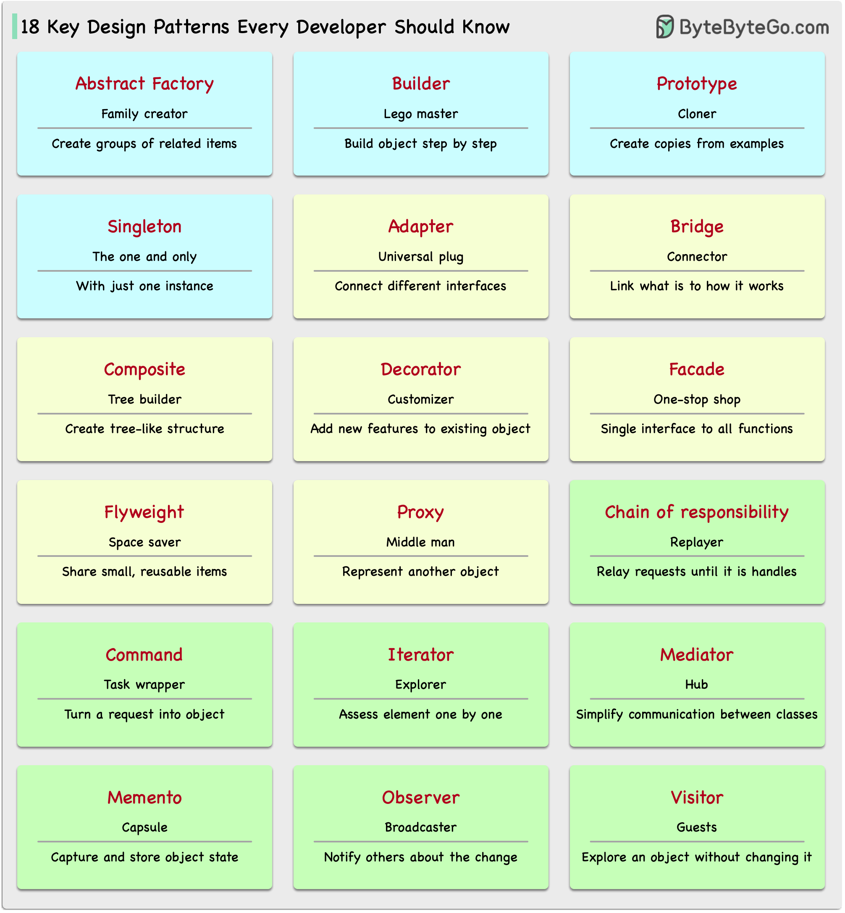

Patterns are reusable solutions to common design problems, resulting in a smoother, more efficient development process. They serve as blueprints for building better software structures. These are some of the most popular patterns:
Abstract Factory: Family Creator - Makes groups of related items.
Builder: Lego Master - Builds objects step by step, keeping creation and appearance separate.
Prototype: Clone Maker - Creates copies of fully prepared examples.
Singleton: One and Only - A special class with just one instance.
Adapter: Universal Plug - Connects things with different interfaces.
Bridge: Function Connector - Links how an object works to what it does.
Composite: Tree Builder - Forms tree-like structures of simple and complex parts.
Decorator: Customizer - Adds features to objects without changing their core.
Facade: One-Stop-Shop - Represents a whole system with a single, simplified interface.
Flyweight: Space Saver - Shares small, reusable items efficiently.
Proxy: Stand-In Actor - Represents another object, controlling access or actions.
Chain of Responsibility: Request Relay - Passes a request through a chain of objects until handled.
Command: Task Wrapper - Turns a request into an object, ready for action.
Iterator: Collection Explorer - Accesses elements in a collection one by one.
Mediator: Communication Hub - Simplifies interactions between different classes.
Memento: Time Capsule - Captures and restores an object’s state.
Observer: News Broadcaster - Notifies classes about changes in other objects.
Visitor: Skillful Guest - Adds new operations to a class without altering it.